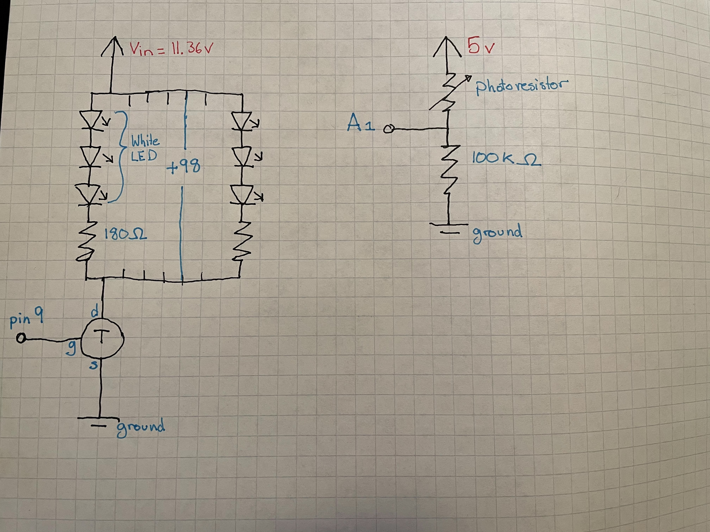

Assignment 6: Talking to the Web! (And the Web Talking Back!)
The Gifs


Talking to the web: I have a photoresistor that, as the light it percieves changes, it changes the color of the oval on my screen. Specifically it changes the greeness of the oval, with bright light making it a light green and low light making it a strong purple.
The web talks back: When I press the key "2", it incrementally brightens my LED strip. when I press "1" it incrementally dims the LED strip
The Schematic
 I used the same circut as my last assignment, so that I could focus on the web connection. I connect up the LED strip to Vin, which will be 11.36 volt, then to the transistor, which is connected to pin 9 and ground. The photoresistor is connected to 5v, with a 100k ohm resistor, and A1 between them to read the voltage difference.The Wiring

Here's the breadboard! I'm using the mini breadboard as a test for my final project. Orange wires connect to 5 volts, red connects to the 12 volts, and blue connects to ground.
The Arduino Code
const int gate = 9; // the transistor gate is connected to pin 9
const int sensorPin = A1; // the pin for reading the photoresistor is pin A1
int sensor = 0; // initialize the variable for the photoresistor data
int computer = 0; // initialize the variable for data from the computer
int LEDBrightness = 0; // initialize the data that stores the LED brightness
void setup() {
Serial.begin(9600); // Initialize serial connection
}
void loop() {
if (Serial.available() > 0) { // if there is data coming from the computer
computer = Serial.read(); // read it and store as computer
}
if (computer == 49) { // if the computer sends in 49 (ASCII for "1")
LEDBrightness -=10; // then decrease the LED brightness by 10
} else if (computer == 50) { // or if the computer sends in 50 (ASCII for "2")
LEDBrightness +=10; // then increase the LED brightness by 10
}
LEDBrightness = constrain(LEDBrightness, 0, 255); // Make sure the brightness is within bounds
analogWrite(gate, LEDBrightness); // write LED brightness to the gate
sensor = analogRead(sensorPin); // read in the photoresistor data
Serial.println(sensor); // print out the photoresistor data
computer = 0; // reset the computer data to 0
}
The Javascript Code
var serial; // variable that holds the serial port library
var portName = 'COM3' // variable that remembers my port name
var inData; // variable that holds the incoming data from the arduino
var green =125; // variable that holds the greenenss of the oval
function setup() { //This is set up stuff I don't fully understand, but makes the server connection work
// Credit to Nadya Peek from hcde439-example3
serial = new p5.SerialPort(); // make a new serial library
serial.on('list', printList); // set up a call back for printlist
serial.on('connected', serverConnected); // set up a callback for server Connected
serial.on('open', portOpen); // Set up a callback for opening the port
serial.on('data', serialEvent); // Set up a call back for a serial event
serial.on('error', serialError); // Set up a callback for errors
serial.on('close', portClose); // Set up a callback for closing the port
serial.list(); // list the serial ports
serial.open(portName); // open a serial port
createCanvas(1200, 800); // create a canvas
}
function printList(portList) { // function to make a port list:
for (var i = 0; i < portList.length; i++) { // for the length of the port list
print(i + " " + portList[i]); // print it's order number and name
}
}
function serverConnected() { // function that checks server connection
print('connected to server.'); // prints connected to server
}
function portOpen() { // function for port opening
print('the serial port opened.') // prints that the port opened
}
function serialError(err) { // function in case of error
print('Something went wrong with the serial port. ' + err); // prints the error
}
function portClose() { //function for closing the port
print('The serial port closed.'); // prints the port is closed
}
function serialEvent() { // function for a serial event
if (serial.available()) { // if there's nw serial data
inData = serial.readLine(); // read it and assign to inData
console.log("got back " + inData); // make a console log of the data
}
}
function keyPressed() { // function for when a key is pressed
serial.write(key); // write that key to serial
}
function draw() { // function for drawing on the canvas
background(0); // background is black
fill(255); // The next things created will be white
text("inData: " + inData, 30, 30); // write on the canvas what the inData is
inData = map(inData, 0, 1023, 0, 255); // map the in data to the RGB color range
inData = constrain(inData, 0, 255); // constrain it just in case
if (inData != 0) { // if the incoming data isn't 0
text("inData: " + inData, 30, 40); // then write in the converted data
if (inData > green) { // and if indata is more than green
green +=1; // add 1 to green
} else if (inData < green) { // otherwise if the data is less than green
green -=1; // decrease green by 1
}
}
green = int(constrain(green, 0, 255)); // constrain green to the color rang just in case
text("green: " + green, 30, 50); // write in green
fill(123, green, 181); //set up the new color that can have varying levels of greenenss
ellipse(600, 400, 1200, 800); //draw a big ellipse of the new color
}
The Math (or general logic)
Talking to the web
The line of communication for this goes: light -> photoresistor -> analogRead() value -> serial printed to the web -> rgb color range -> how green the elipse is
When I looked up the range for the photoresistor last time, I found that darkness creates a resistance of 200k ohms, and bright light creates a resistance of 10k ohms. I want a wide range of sensing,, and last time I found that a number between the max and min of the photoresistor resistance works great. My Vout has a range of:
Vout is between 5*100/(100+ 10) and 5* 100/(100+200)
Vout is between 4.54 v and 1.66v/p>
That is converted to an analogRead range of 0-1023 and sent to the web. In the web, I want it to change the greeness of my oval, so I map and constrain to the rgb color range(0-255).
When I first set this up, I sent that freshly converted value straigt to the rgb coloring. However, that created a violently flickering oval, that flashed beteween green and purple every update. Every other data value or so was coming up 0, which I think is from checking for serial communication and not getting any yet. I only want the color to be affected by nonzero values, so I set up an if statement filtering out 0 values. Then I made a value "green" that is seperate from the incoming data. green wants to be the same value as inData, but can only change up or down by a value of one each time. I did that because I like the slow transfer of color, and the steadiness of the color.
The Web Talks back:
This one is pretty simple. Any key I press is sent to the arduino. If the value sent is 49 or 50, the ASCII values of 1 and 2, then the LED strip brightens or dims. I used the increment of 10 as the increase and decrease values because it's noticible enough but the jumps arent too jarring. I also constrained the LED brightness variable to the valid range of 0 to 255. I often use constrain as a safety spot. Even if I'm sure the values shouldn't be beyond the needed range, it's always good to double check, especially when going out to the electric circut.
One interesting thing I found was the need to return the computer value to 0. When I was first trying the setup out, when I pressed 2 the LED strip went fully on. I was confused and changed the step value to just one. When I reset and pressed 2 again, I saw the LED smoothly brighten to full. when I pressed 2, I made made the variable computer have the value of 50. Therefore, when passing through the main loop the arduino goes into the "if (computer == 50)" statement repeatedly untill I pressed a new key and changed computer. Since I only want the action to happen once, I added a line to change computer to 0 after every loop. I could have also put my if/else statements inside of the "if (Serial.available >0)" Statements, since that is only entered when a key is being pressed.